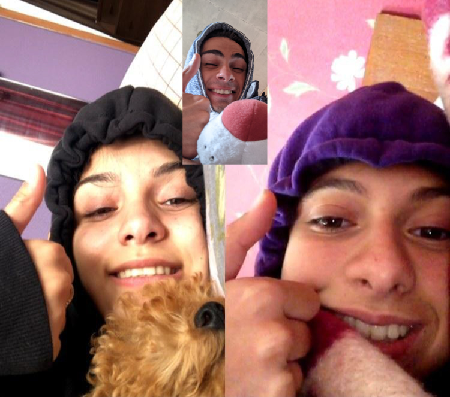
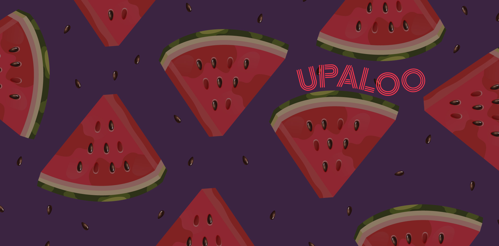

ჩამოსქროლე
ფოტოზე ხედავთ ორ უმშვენიერეს პიროვნებას.
ფაქტი
როდესაც ვიდეო/ბუმერანგში მე და შენ გვერდიგვერდ გამოვჩნდებით
ვსქრინავ და გალერიაში ვინახავ
ნდობა
არ აქვს მნიშვნელობა
რამდენი ხანია გიცნობ
არ აქვს მნიშვნელობა
ვინ რას მეტყვის შენზე
თუნდაც გაბრაზებული ვიყო, შენ მაინც ჩემს გულში იქნები
და შეგეძლება მშვიდად დამეყრდნო მთელი შენი ცხოვრება
ფაქტი
გულწრფელი რომ ვიყოთ...
პაზლები შენ შემაყვარე
მოგონებები
მიუხედავად იმისა, რომ ჩვენი ურთიერთობა არცისეთი ხნიანია, როგორიც მე ვარ.. ვფიქრობ ჩვენი მოგონებები ამის გათვალისწინებით მაინც მდიდარია
როცა საქმე ჩვენს ურთიერთობას ეხება პირვველ რიგში მახსენდება შენთან გატარებული ყოველი ის წამი სადაც მხოლოდ ჩვენ ორნი ვართ და სხვა არავინ.
ასეთი წუთები არცისეთი ბევრია თუმცა ყოველი მათგანი მაინც ინახავს თავის განსაკუთრებულობას.
მე სწორედ ამ წუთებში მივხვდი, რომ ცაზე ბევრი ვარსკვლავი ჩემი საღამოს ტკბილი დასასრულის მომასწავებელია, რადგან შეუძლებელია შენი ყელიდან წამოსულ სურნელს გავუძლო, როცა მას მიღერებ...
ფაქტი
რომ არა შენ
თევზი ვიქნებოდი წყლის გარეშე
სიხარული
მიხარია
ჩემს სიხარულს/მწუხარებას პირველი რომ იზიარებ
მიხარია
როცა ჩემთან ერთად არჩევ და განიხილავ პაზლებს
მიხარია
ყოველი შენი სახლში მშვიდობით მოსვლა
მიხარია
როდესაც ჯგუფში ,ისევე როგორც მე, ალკოჰოლს არ იღებ
ფაქტი
შენი მიმზიდველი მხრები/ლავიწები
ჩემს ტვინში Error-ს იწვევს
მოგონებები
...ზემოთხსენებულ მოგონებებთან ერთად, როგორც არუნდა ვეცადოთ, გვერდს ვერ ავუვლით იმ ნაწილს ,რომელშიც ჩვენს გულებს ძალიან დიდი დისტანცია აშორებს
თუმცა არც არის საჭირო გვერდი ავუაროთ, რადგან ამ სიშორის დამსახურებით გამოწვეული მონატრებით უფრო მარტივად ვიაზრებთ, თუ როგორ ძლიერად ვართ ერთმანეთთან დაკავშირებული.
ყოველი ჩემთვის გადაღებული სარკეში შენი სელფი.. ყოველი ჩემი პალმის გაყვავება.. ჩვენი "გემრიელად მიირთვი"..
სწორედ ესენი ქმნიან ჩვენს მოგონებებს და იმკვიდრებენ ადგილს ჩვენს გულებში.
მაგალითად ჩემთვის დაუვიწყარია ის დღე, როდესაც გთხოვე ხალათი ისე შემოგეხვია როგორც ანიმაციებში პრინცესები იხვევენ ქურქს. არ დამავიწყდება რადგან მაგ დღეს ჩემში მილიონობით პეპელამ გაიფრინა🦋
ფაქტი
როცა თავზე messy bun გადევს შენზე ვერ ვბრაზდები
ბედნიერება
ვბედნიერდები
შენი ფოტოების გადაღება/ედითით
ვბედნიერდები
როცა ჩემი ნაჩუქარი საროჭკა გაცვია
ვბედნიერდები
როცა ჩემს ყველაზე უაზრო ხუმრობებზეც კი იცინი